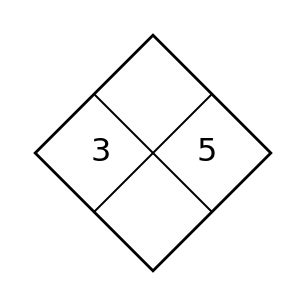
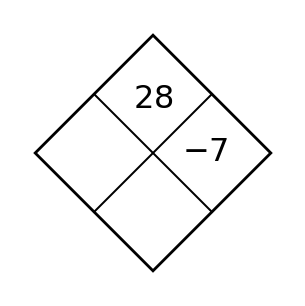
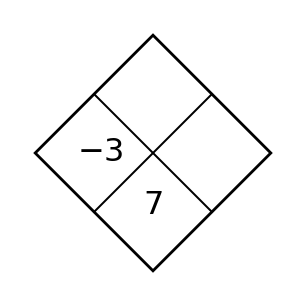
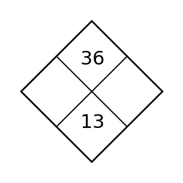
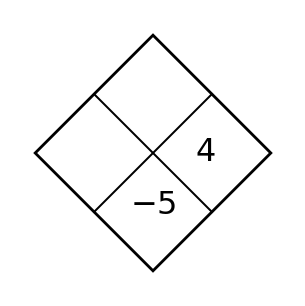
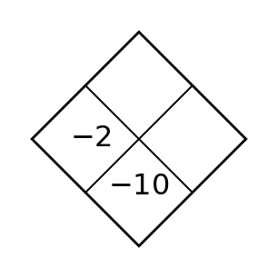
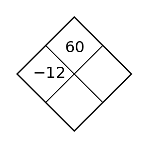
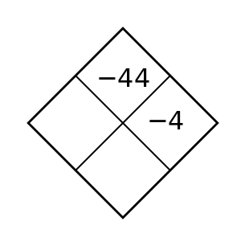
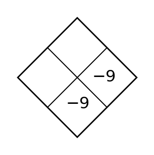

Section 4.1 — Day 1
A table has equal first differences when inputs increase by $1$. Name the most likely family and the evidence that supports it.
Which form is usually most convenient for graphing quickly: $y=mx+b$ or $Ax+By=C$? Explain in one sentence.
Spiral: Without graphing, find the slope of each line:
- Through $(4,1)$ and $(2,5)$
- Through $(0,0)$ and $(10,5)$
- A vertical line through $(6,-5)$
- Through $(1,6)$ and $(10,6)$
Formative Spiral: Use the diamond. The top number is the product of the two side numbers, and the bottom number is their sum. Fill in the missing cell(s).

Section 4.1 — Day 2
A context describes a population that is multiplied by the same factor each year. Name the likely family.
When a graph of a system shows one intersection point, how many ordered-pair solutions does the system have?
Spiral: A bicyclist begins at mile $12$ and rides at $7$ miles per hour. Which value is the slope, $12$ or $7$?
Formative Spiral: Use the diamond. The top number is the product of the two side numbers, and the bottom number is their sum. Fill in the missing cell(s).

Section 4.1 — Day 3
A ball is dropped and its height values for equal time steps are $96, 72, 48, 24, 0$. Build the difference pattern, choose a likely family for this interval, and explain why the model should stop at the last value.
Solve the system. Then write one sentence explaining what the graph of the two equations would look like.
$$\begin{aligned}y=3x+2\\6x-2y=8\end{aligned}$$
Spiral: Four related lines are shown. Use slope and intercept features to decide which one could represent $y=2x+3$, $y=2x-2$, $y=2x+1$, and $y=-2x+1$. Explain one choice.

Formative Spiral: Use the diamond. The top number is the product of the two side numbers, and the bottom number is their sum. Fill in the missing cell(s).

Section 4.2 — Day 1
For $g(x)=f(x+3)-2$, describe the horizontal and vertical translations.
What graph feature tells you that a system has no solution?
Spiral: A line is parallel to $y=3x-4$ and passes through $(0,8)$. Write its equation and explain the word parallel using slope.
Formative Spiral: Use the diamond. The top number is the product of the two side numbers, and the bottom number is their sum. Fill in the missing cell(s).

Section 4.2 — Day 2
In $y=(x+4)^2-7$, identify the translated vertex.
What graph feature tells you that a system has no solution?
Spiral: Use the line shown to identify whether the $y$-intercept is positive, negative, or zero.

Formative Spiral: Use the diamond. The top number is the product of the two side numbers, and the bottom number is their sum. Fill in the missing cell(s).

Section 4.2 — Day 3
Write an equation for a translation of $y=|x|$ with vertex $(-4,6)$. Then explain how the equation shows the move.
The graph shows two lines labeled A and B. Estimate the slope and y-intercept of each line from the graph, then write the solution-type statement and justify it with slope/intercept language.

Spiral: A cell phone plan charges \$30 per month plus \$0.05 per text. Write an equation for total cost $C$ after $t$ texts, then find the cost for $180$ texts.
Formative Spiral: Use the diamond. The top number is the product of the two side numbers, and the bottom number is their sum. Fill in the missing cell(s).

Section 4.3 — Day 1
In $y=-2|x|$, identify the reflection and stretch.
For $y=-4x+2$, what expression should replace $y$ in another equation?
Spiral: A temperature starts at $68$ degrees and drops $2$ degrees each hour. Write a linear model and use it to predict the temperature after $9$ hours.
Formative Spiral: Use the diamond. The top number is the product of the two side numbers, and the bottom number is their sum. Fill in the missing cell(s).

Section 4.3 — Day 2
If $(-3,5)$ is on $f$, what point is on $g(x)=-f(x)$?
Why is substitution efficient when one equation is $x=8-y$?
Spiral: State the slope of the line $y=12$.
Formative Spiral: Use the diamond. The top number is the product of the two side numbers, and the bottom number is their sum. Fill in the missing cell(s).

Section 4.3 — Day 3
Write a transformed absolute value equation with vertex $(1,4)$, reflected over the $x$-axis, and vertically stretched by factor $3$.
Solve the system using substitution and state the ordered pair.
$$\begin{aligned}y=-x+9\\2x+y=12\end{aligned}$$
Spiral: A car rental plan charges \$30 plus \$0.25 per mile. Another plan charges no starting fee and \$0.80 per mile. Write equations and compare the cost for $60$ miles.
Formative Spiral: Use the diamond. The top number is the product of the two side numbers, and the bottom number is their sum. Fill in the missing cell(s).

Section 4.4 — Day 1
Identify the like terms in $4x^2+3x-5+7x-2x^2$.
Which variable is isolated in $3x+y=14$ after rewriting it as $y=14-3x$?
Spiral: Compare $y=\frac{5}{2}x-1$ with a relationship that passes through $(0,3)$ and $(4,13)$. Which has the larger slope?
Formative Spiral: Use the diamond. The top number is the product of the two side numbers, and the bottom number is their sum. Fill in the missing cell(s).

Section 4.4 — Day 2
What area-model cell comes from multiplying $-2$ by $x$?
What does the ordered pair found by substitution represent on the graph of the two equations?
Spiral: Read the coefficient of $x$ in each equation, $y=\frac{1}{2}x+4$ and $y=3x-2$, and name the line with the steeper positive slope.
Formative Spiral: Use the diamond. The top number is the product of the two side numbers, and the bottom number is their sum. Fill in the missing cell(s).

Section 4.4 — Day 3
Multiply $(x+8)(x-3)$ and combine like terms.
Use substitution to solve the system. Show the one-variable equation that results from your substitution.
$$\begin{aligned}m=2n+1\\3m+n=25\end{aligned}$$
| Year after 2020 | 0 | 1 | 2 | 3 | 4 |
|---|---|---|---|---|---|
| Members | 120 | 132 | 143 | 156 | 169 |
Spiral: Write a rough linear model and interpret the slope.
Formative Spiral: Use the diamond. The top number is the product of the two side numbers, and the bottom number is their sum. Fill in the missing cell(s).

Section 4.5 — Day 1
For $y=(x-3)^2+2$, identify the vertex.
Which phrase usually suggests a rate in a linear model: “each,” “total,” or “both”?
Spiral: A linear model for delivery time is $T=4.2d+8$, where $d$ is miles. Predict the time for $15$ miles and interpret the intercept.
Formative Spiral: Use the diamond. The top number is the product of the two side numbers, and the bottom number is their sum. Fill in the missing cell(s).

Section 4.5 — Day 2
Name the form that most directly shows the vertex of a quadratic.
In a mixture problem with $x$ pounds of nuts and $y$ pounds of dried fruit, what would $x+y=25$ represent?
Spiral: A residual is actual value minus predicted value. If actual is $48$ and predicted is $45$, find the residual.
Formative Spiral: Use the diamond. The top number is the product of the two side numbers, and the bottom number is their sum. Fill in the missing cell(s).

Section 4.5 — Day 3
Rewrite $y=x^2-8x+12$ in factored form and identify the zeros.
Adult tickets cost \$12 and student tickets cost \$8. A group sells 95 tickets for \$920. Let $a$ be adult tickets and $s$ be student tickets. Write and solve a system for $a$ and $s$.
| Day | 0 | 1 | 2 | 3 | 4 |
|---|---|---|---|---|---|
| Height (cm) | 12 | 15 | 18 | 21 | 24 |
Spiral: Use the table to write a rate-of-change statement in context. Then predict the height on day $9$.
Formative Spiral: Use the diamond. The top number is the product of the two side numbers, and the bottom number is their sum. Fill in the missing cell(s).
